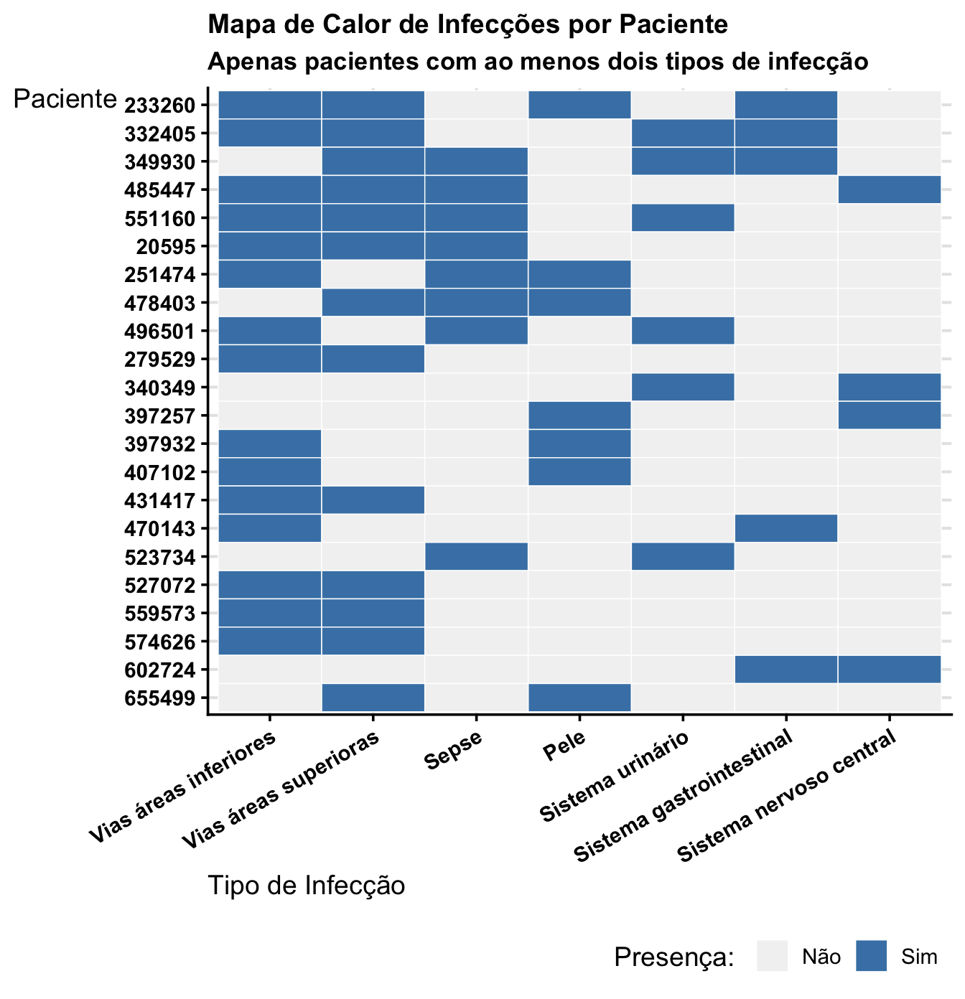
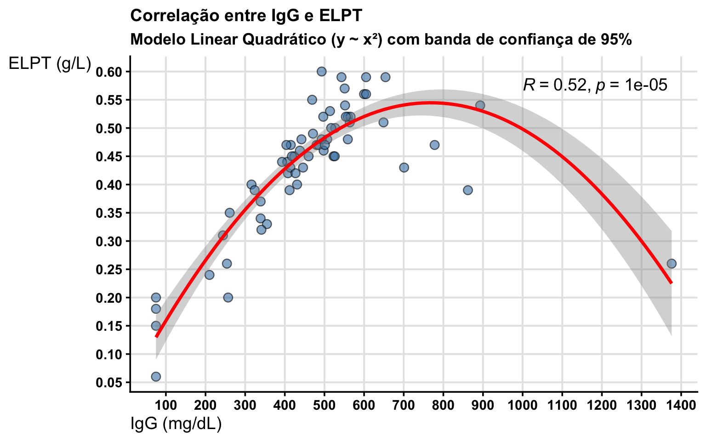
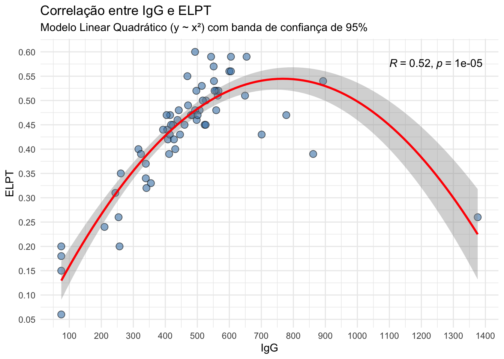
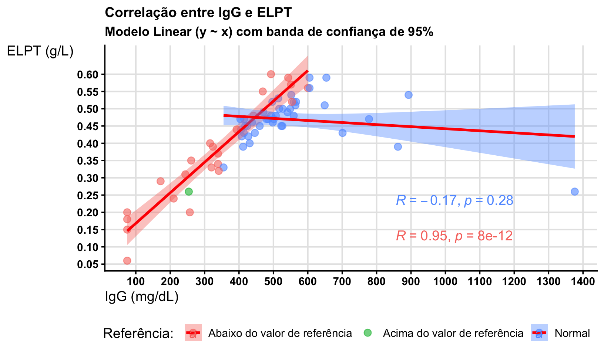
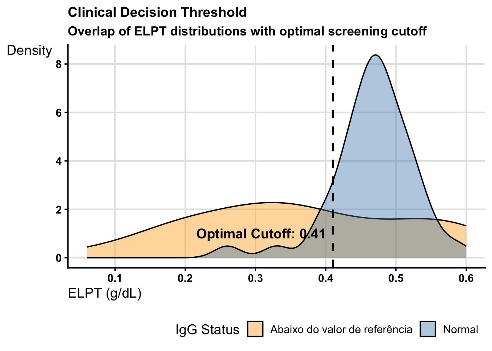
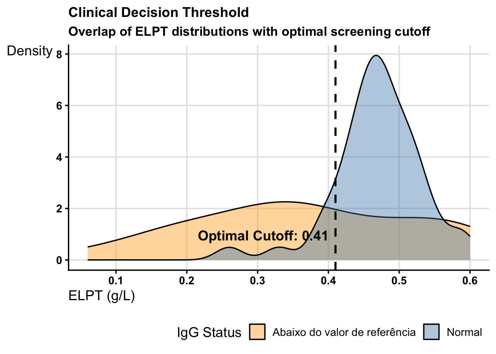
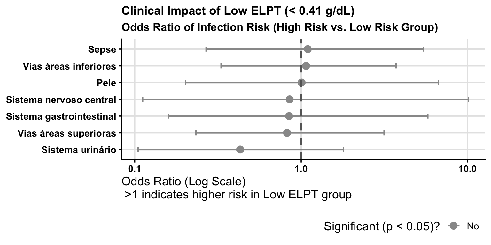

elpt_url <-paste0("https://docs.google.com/spreadsheets/d/","1FHy8nsW_WfEiWfWXdk7atQlaChNAkJIrAkuNxfOuECg/","edit?gid=1057715313#gid=1057715313")elpt <- googlesheets4::read_sheet(elpt_url) |> dplyr::distinct()elpt <- elpt |> dplyr::mutate(IDADE = lubridate::time_length( lubridate::interval(`6 - Data de Nascimento`, `5 - Data de Cadastro do Exame`), "years" ) )
1. Análise epidemiológica
a) Porcentagem de cada faixa etária na amostra
Code
elpt |> dplyr::count(`3 - Insira Faixa etária do paciente`) |> dplyr::mutate(Percentual = n /nrow(elpt))
# A tibble: 4 × 3
`3 - Insira Faixa etária do paciente` n Percentual
<chr> <int> <dbl>
1 1 ano a 3 anos 85 0.525
2 10 anos a 17 anos 43 0.265
3 4 anos a 9 anos 33 0.204
4 < 1 ano 1 0.00617
b) Setores mais representativos na amostra
Code
elpt |> dplyr::count(`2 - Insira o Setor de Solicitação do exame`) |> dplyr::mutate(Percentual = n /nrow(elpt)) |> dplyr::arrange(dplyr::desc(n)) |>print(n =22)
# A tibble: 22 × 3
`2 - Insira o Setor de Solicitação do exame` n Percentual
<chr> <int> <dbl>
1 Laboratório de Analises Clinicas 80 0.494
2 Posto 52 9 0.0556
3 UTI Geral 8 0.0494
4 UTI Cirúrgica 7 0.0432
5 Emergência Convenio 6 0.0370
6 Emergência SUS Interno 6 0.0370
7 Posto 51 6 0.0370
8 Ambulatório Hemato-Oncologia 4 0.0247
9 Infectologia 4 0.0247
10 Posto 11 Nefrologia 4 0.0247
11 Posto 21 4 0.0247
12 Posto 23 4 0.0247
13 Emergência SUS 3 0.0185
14 Posto 41 3 0.0185
15 UTI Cardiologia 3 0.0185
16 HD Posto 12 2 0.0123
17 Posto 31 2 0.0123
18 Posto 33 2 0.0123
19 Posto 42 2 0.0123
20 Posto 34 1 0.00617
21 Posto 43 1 0.00617
22 U.I 4º Andar - Posto 40 1 0.00617
c) Sexo
Code
elpt |> dplyr::count(`4 - Sexo`) |> dplyr::mutate(Percentual = n /nrow(elpt))
d) Presença/ausência de quadros infecciosos e sistema mais afetado em casos positivos para quadros infecciosos
Code
elpt |> dplyr::count(`7 - Quadros infecciosos até o momento da coleta?`) |> dplyr::mutate(Percentual = n /nrow(elpt))
# A tibble: 3 × 3
`7 - Quadros infecciosos até o momento da coleta?` n Percentual
<chr> <int> <dbl>
1 Não 45 0.278
2 Sem informação 44 0.272
3 Sim 73 0.451
Em quem tem caso positivo para quadro infeccioso
Code
elpt |> dplyr::filter(`7 - Quadros infecciosos até o momento da coleta?`=="Sim") |> dplyr::select(`8 - Infecção em sistema nervoso central?`,`9 - Infecção de vias áreas superioras?`,`10 - Infecção de vias áreas inferiores?`,`11 - Infecção de sistema urinário?`,`12 - Infecção de sistema gastrointestinal?`,`13 - Infecção de pele?`,`14 - Sepse?`) |> tidyr::pivot_longer(`8 - Infecção em sistema nervoso central?`:`14 - Sepse?`) |> dplyr::filter(value =="Sim") |> dplyr::count(name) |> dplyr::mutate(Percentual = n /sum(n)) |> dplyr::arrange(dplyr::desc(n))
# A tibble: 7 × 3
name n Percentual
<chr> <int> <dbl>
1 10 - Infecção de vias áreas inferiores? 24 0.255
2 9 - Infecção de vias áreas superioras? 18 0.191
3 14 - Sepse? 14 0.149
4 11 - Infecção de sistema urinário? 13 0.138
5 13 - Infecção de pele? 10 0.106
6 12 - Infecção de sistema gastrointestinal? 9 0.0957
7 8 - Infecção em sistema nervoso central? 6 0.0638
Dos 73 pacientes com quadro infeccioso, 22 apresentaram em mais de um sistema (ao menos em dois). 30.14%.
Nestes 22, estes são os sintomas que aparecem e em quantos dos 22 pacientes.
Code
proxy <- elpt |> dplyr::filter(`7 - Quadros infecciosos até o momento da coleta?`=="Sim" ) |> dplyr::select(`1 - Insira o Prontuário do Paciente`,`8 - Infecção em sistema nervoso central?`,`9 - Infecção de vias áreas superioras?`,`10 - Infecção de vias áreas inferiores?`,`11 - Infecção de sistema urinário?`,`12 - Infecção de sistema gastrointestinal?`,`13 - Infecção de pele?`,`14 - Sepse?`) |> tidyr::pivot_longer(!`1 - Insira o Prontuário do Paciente`) |> dplyr::filter(value =="Sim") |> dplyr::group_by(`1 - Insira o Prontuário do Paciente`) |> dplyr::mutate(n = dplyr::n()) |> dplyr::ungroup() |> dplyr::filter(n >1) |> dplyr::arrange(dplyr::desc(n), `1 - Insira o Prontuário do Paciente`) ( proxy2 <- proxy |> dplyr::select(!c(value, n)) |>mutate(name = stringr::str_remove(name, "^[0-9]+ - "),name = stringr::str_remove(name, "\\?"),name = stringr::str_remove(name, "Infecção (de|em) "),name = stringr::str_to_sentence(name)) |> dplyr::count(name) |> dplyr::arrange(dplyr::desc(n)) |> dplyr::mutate(Percentual = n /22) )
# A tibble: 7 × 3
name n Percentual
<chr> <int> <dbl>
1 Vias áreas inferiores 15 0.682
2 Vias áreas superioras 13 0.591
3 Sepse 8 0.364
4 Pele 7 0.318
5 Sistema urinário 6 0.273
6 Sistema gastrointestinal 5 0.227
7 Sistema nervoso central 4 0.182
O máximo de infecções que um paciente apresenta são 4, e 5 pacientes ficaram em tal situação.
Code
proxy |> dplyr::mutate(value =ifelse(value =="Sim", 1, 0)) |> tidyr::pivot_wider(names_from = name, values_from = value, values_fill =0) |> dplyr::select(-n) |> tidyr::pivot_longer(-`1 - Insira o Prontuário do Paciente`, names_to ="Infection_Type", values_to ="Present") |>mutate(Infection_Type = stringr::str_remove(Infection_Type, "^[0-9]+ - "),Infection_Type = stringr::str_remove(Infection_Type, "\\?"),Infection_Type = stringr::str_remove(Infection_Type, "Infecção (de|em) "),Infection_Type = stringr::str_to_sentence(Infection_Type)) |>ggplot() +aes(x =factor(Infection_Type, levels =unique(proxy2$name)), y =factor(`1 - Insira o Prontuário do Paciente`, levels =unique(proxy$`1 - Insira o Prontuário do Paciente`) |>rev()), fill =as.factor(Present)) +geom_tile(color ="white") +# Adds a grid line effectscale_fill_manual(values =c("0"="grey95", "1"="steelblue"),labels =c("Não", "Sim"),name ="Presença: ") +labs(x ="Tipo de Infecção", y ="Paciente",title ="Mapa de Calor de Infecções por Paciente",subtitle ="Apenas pacientes com ao menos dois tipos de infecção") +theme(axis.text.x =element_text(angle =30 , hjust =1))

e) Porcentagem de indivíduos com comorbidade e comorbidades mais frequentes
Code
elpt |> dplyr::count(`21 - Paciente possui alguma comorbidade/diagnostico de base?`) |> dplyr::mutate(Percentual = n /nrow(elpt))
# A tibble: 3 × 3
21 - Paciente possui alguma comorbidade/diagnostico de base…¹ n Percentual
<chr> <int> <dbl>
1 Não 19 0.117
2 Sem informação 29 0.179
3 Sim 114 0.704
# ℹ abbreviated name:
# ¹`21 - Paciente possui alguma comorbidade/diagnostico de base?`
Code
elpt |> dplyr::filter(`21 - Paciente possui alguma comorbidade/diagnostico de base?`=="Sim" ) |> dplyr::count(`21.1 - Qual comorbidade o paciente possui?-Em caso negativo responder com NA`) |> dplyr::arrange(dplyr::desc(n)) |> dplyr::filter(n >1)
# A tibble: 12 × 2
21.1 - Qual comorbidade o paciente possui?\n\n-Em caso negativo resp…¹ n
<chr> <int>
1 Síndrome genética 6
2 Alergia 5
3 Diabetes tipo I ou II 4
4 Hepatopatia 4
5 Síndrome nefrótica 4
6 Deformidade óssea congênita 3
7 Neurologica 3
8 Alergia; Lúpus Eritematoso Sistêmico 2
9 Anemia; TMO 2
10 Artrite Idiopática Juvenil 2
11 Cardiopatia 2
12 Neurologica; Prematuridade 2
# ℹ abbreviated name:
# ¹`21.1 - Qual comorbidade o paciente possui?\n\n-Em caso negativo responder com NA`
Entre os 114 pacientes com comorbidade, 87 diferentes combinações de comorbidade são observadas - mas apenas 12 aparecem em ao menos dois pacientes.
f) Porcentagem de pacientes que realizam hemodiálise
# A tibble: 3 × 3
`22 - Paciente realiza hemodiálise?` n Percentual
<chr> <int> <dbl>
1 Não 94 0.580
2 Sem informação 60 0.370
3 Sim 8 0.0494
g) Porcentagem de pacientes que passaram por cirurgia nos 30 dias antes do exame
Code
elpt |> dplyr::count(`23 - Paciente passou por cirurgia nos 30 dias que antecederam a realização do exame ELPT?` ) |> dplyr::mutate(Percentual = n /nrow(elpt))
# A tibble: 3 × 3
23 - Paciente passou por cirurgia nos 30 dias que anteceder…¹ n Percentual
<chr> <int> <dbl>
1 Não 88 0.543
2 Sem informação 68 0.420
3 Sim 6 0.0370
# ℹ abbreviated name:
# ¹`23 - Paciente passou por cirurgia nos 30 dias que antecederam a realização do exame ELPT?`
h) Porcentagem de pacientes que passaram por tratamento oncológico nos 30 antes do exame
Code
elpt |> dplyr::count(`24 - Paciente passou por tratamento oncológico nos 30 dias que antecederam a realização do exame ELPT?` ) |> dplyr::mutate(Percentual = n /nrow(elpt))
# A tibble: 3 × 3
24 - Paciente passou por tratamento oncológico nos 30 dias …¹ n Percentual
<chr> <int> <dbl>
1 Não 93 0.574
2 Sem informação 63 0.389
3 Sim 6 0.0370
# ℹ abbreviated name:
# ¹`24 - Paciente passou por tratamento oncológico nos 30 dias que antecederam a realização do exame ELPT?`
i) Porcentagem de pacientes que fizeram uso de medicação
Code
elpt |> dplyr::count(`27 - Paciente faz uso de medicação que pode causar imunodeficiência nos 30 dias que antecederam a realização do exame ELPT?` ) |> dplyr::mutate(Percentual = n /nrow(elpt))
# A tibble: 3 × 3
27 - Paciente faz uso de medicação que pode causar imunodef…¹ n Percentual
<chr> <int> <dbl>
1 Não 53 0.327
2 Sem informação 68 0.420
3 Sim 41 0.253
# ℹ abbreviated name:
# ¹`27 - Paciente faz uso de medicação que pode causar imunodeficiência nos 30 dias que antecederam a realização do exame ELPT?`
j) Porcentagem de pacientes com registro de óbito. Definir intervalo de tempo entre a data do exame e a data do óbito.
Code
elpt |> dplyr::count(`33 - Paciente possui registro de óbito?`) |> dplyr::mutate(Percentual = n /nrow(elpt))
# A tibble: 3 × 3
`33 - Paciente possui registro de óbito?` n Percentual
<chr> <int> <dbl>
1 Não 152 0.938
2 Sem informação 2 0.0123
3 Sim 8 0.0494
Code
( proxy <- elpt |> dplyr::filter(`33 - Paciente possui registro de óbito?`=="Sim") |> dplyr::select(`5 - Data de Cadastro do Exame`, `33.2 - Data de óbito`) |> dplyr::mutate(Intervalo_dias = lubridate::time_length( lubridate::interval(`5 - Data de Cadastro do Exame`, `33.2 - Data de óbito`), "days" ),Intervalo_meses = lubridate::time_length( lubridate::interval(`5 - Data de Cadastro do Exame`, `33.2 - Data de óbito`), "months" ) ))
Min. 1st Qu. Median Mean 3rd Qu. Max.
16.00 83.75 139.00 245.88 292.50 898.00
Code
summary(proxy$Intervalo_meses)
Min. 1st Qu. Median Mean 3rd Qu. Max.
0.5333 2.7339 4.5903 8.0883 9.6234 29.5484
Oito pacientes vieram a óbito (5%), com um tempo médio de sobrevida de 246 dias (8.1 meses) - mediana de 139 dias (4.6 meses).
2. Análise de indivíduos com dosagem de IgG
a) A partir dos valores de dosagem de IgG, verificar se existe correlação com os valores de ELPT; Não considerar na estatistica os pacientes que fazem reposição de IgG - pois é um tratamento, logo não é um dado basal
68 pacientes (41.2%) tem registro do valor de IgG e não fizeram reposição.
Code
( proxy <- elpt |> dplyr::filter(`19 - Fez reposições de Imunoglobulinas durante os 30 dias que antecederam a realização do exame ELPT?`!="Sim"&`18.1 - Como se encontra o resultado de IgG?NA = não se aplica`!="NA" ) |> dplyr::rename(IgG =`18.2 - Qual resultado da dosagem? Colocar apenas número-Responder com NA em caso de não realização do exame`) |> dplyr::rename(ELPT =`16 - Resultado do Primeiro exame`) |> dplyr::select(IgG, ELPT) |> tidyr::unnest(IgG) )
Correlação linear de Pearson de 0.55 (forte e estatísticamente significativa, 1.1e-06 = 0.0000011).
Contudo, vemos que o que melhor se adequa aos dados é um comportamento quadrático - subida linear até um igG ao redor de 600 e a partir dali uma queda, mas temos pouquíssimos pacientes passando desse valor.
Code
proxy |>ggplot() +aes(x = IgG, y = ELPT) +geom_point(size =3, shape =21, fill ="steelblue", alpha =0.6) +geom_smooth(method ="lm", formula = y ~poly(x, 2), color ="red", se =TRUE) + ggpubr::stat_cor(method ="pearson", label.x =1000, label.y =0.575) +labs(title ="Correlação entre IgG e ELPT",subtitle ="Modelo Linear Quadrático (y ~ x²) com banda de confiança de 95%",x ="IgG (mg/dL)", y ="ELPT (g/dL)") +scale_x_continuous(breaks =seq(0, 1400, by =100)) +scale_y_continuous(breaks =seq(0, 1, by =0.05))

b) Entre os indivíduos com dosagem de IgG abaixo do valor de referência, qual foi o valor médio, mínimo e máximo do valor de ELPT?
Code
elpt |> dplyr::count(`18.1 - Como se encontra o resultado de IgG?NA = não se aplica` )
# A tibble: 3 × 2
`18.1 - Como se encontra o resultado de IgG?\n\nNA = não se aplica` n
<chr> <int>
1 Abaixo do valor de referência 28
2 NA 90
3 Normal 44
Code
proxy <- elpt |> dplyr::filter(`18.1 - Como se encontra o resultado de IgG?NA = não se aplica`=="Abaixo do valor de referência" ) |> dplyr::rename(IgG =`18.2 - Qual resultado da dosagem? Colocar apenas número-Responder com NA em caso de não realização do exame`) |> dplyr::rename(ELPT =`16 - Resultado do Primeiro exame`) |> dplyr::select(IgG, ELPT) |> tidyr::unnest(IgG) summary(proxy$ELPT)
Min. 1st Qu. Median Mean 3rd Qu. Max.
0.0600 0.2550 0.3450 0.3657 0.4900 0.6000
Code
proxy |>ggplot() +aes(x = IgG, y = ELPT) +geom_point(size =3, shape =21, fill ="steelblue", alpha =0.6) +geom_smooth(method ="lm", formula = y ~poly(x, 1), color ="red", se =TRUE) + ggpubr::stat_cor(method ="pearson") +labs(title ="Correlação entre IgG e ELPT",subtitle ="Modelo Linear (y ~ x) com banda de confiança de 95%",x ="IgG (mg/dL)", y ="ELPT (g/dL)") +scale_x_continuous(breaks =seq(0, 700, by =50)) +scale_y_continuous(breaks =seq(0, 1, by =0.05))

ELPT médio de 0.366, min 0.06 e máx 0.6.
c) Entre os indivíduos com dosagem de IgG acima do valor de referência e que NÃO fazem reposição de IgG, qual foi o valor médio, mínimo e máximo do valor de ELPT?
Nenhum paciente com IgG acima do valor de referência.
d) Entre os indivíduos com dosagem de IgG abaixo do valor de referência, quantos possuíam comorbidade? Quais eram mais frequentes?
22 pacientes.
Code
elpt |> dplyr::filter(`18.1 - Como se encontra o resultado de IgG?NA = não se aplica`=="Abaixo do valor de referência" ) |> dplyr::count(`21 - Paciente possui alguma comorbidade/diagnostico de base?`)
# A tibble: 3 × 2
`21 - Paciente possui alguma comorbidade/diagnostico de base?` n
<chr> <int>
1 Não 4
2 Sem informação 2
3 Sim 22
Code
elpt |> dplyr::filter(`18.1 - Como se encontra o resultado de IgG?NA = não se aplica`=="Abaixo do valor de referência"&`21 - Paciente possui alguma comorbidade/diagnostico de base?`=="Sim" ) |> dplyr::count(`21.1 - Qual comorbidade o paciente possui?-Em caso negativo responder com NA`) |> dplyr::arrange(dplyr::desc(n))
# A tibble: 21 × 2
21.1 - Qual comorbidade o paciente possui?\n\n-Em caso negativo resp…¹ n
<chr> <int>
1 Anemia; TMO 2
2 Acidemia propiônica 1
3 Alergia; Cardiopatia; Hepatopatia; Hipotireoidismo; Deficiência de GH 1
4 Alergia; Insuficiência renal; Síndrome genética; Lúpus Eritematoso Sis… 1
5 Anemia; Síndrome de Evans 1
6 Cardiopatia; Doença renal 1
7 Cardiopatia; Hepatopatia; Pneumopatia; Síndrome genética; Hipogamaglob… 1
8 Cardiopatia; Pneumopatia; Transplante cardíaco 1
9 Deformidade óssea congênita; Insuficiência renal 1
10 Diabetes tipo I ou II 1
# ℹ 11 more rows
# ℹ abbreviated name:
# ¹`21.1 - Qual comorbidade o paciente possui?\n\n-Em caso negativo responder com NA`
3. Análise dos menores de 1 ano
a) Entre os menores de 1 ano, quantos apresentavam a comorbidade “Prematuridade”?
Apenas um paciente menor de 1 ano. Paciente sem informação de comorbidades.
Code
elpt |> dplyr::count(`3 - Insira Faixa etária do paciente`)
# A tibble: 4 × 2
`3 - Insira Faixa etária do paciente` n
<chr> <int>
1 1 ano a 3 anos 85
2 10 anos a 17 anos 43
3 4 anos a 9 anos 33
4 < 1 ano 1
Code
elpt |> dplyr::filter(`3 - Insira Faixa etária do paciente`=="< 1 ano") |> dplyr::count(`21 - Paciente possui alguma comorbidade/diagnostico de base?`)
# A tibble: 1 × 2
`21 - Paciente possui alguma comorbidade/diagnostico de base?` n
<chr> <int>
1 Sem informação 1
b) Levando em consideração pacientes que fizeram os exames ELPT + IgG, definir um valor de referência para ELPT levando como referência a dosagem de IgG
72 pacientes.
Code
( proxy <- elpt |> dplyr::rename(IgG_Referência =`18.1 - Como se encontra o resultado de IgG?NA = não se aplica`) |> dplyr::rename(IgG =`18.2 - Qual resultado da dosagem? Colocar apenas número-Responder com NA em caso de não realização do exame`) |> dplyr::rename(ELPT =`16 - Resultado do Primeiro exame`) |> dplyr::filter(IgG_Referência !="NA") |> dplyr::select(IgG, ELPT, IgG_Referência) |> tidyr::unnest(IgG) )
# A tibble: 72 × 3
IgG ELPT IgG_Referência
<dbl> <dbl> <chr>
1 412 0.39 Normal
2 600 0.56 Abaixo do valor de referência
3 406 0.44 Normal
4 424 0.45 Abaixo do valor de referência
5 701 0.43 Normal
6 893 0.54 Normal
7 1376 0.26 Normal
8 507 0.48 Normal
9 552 0.54 Normal
10 415 0.47 Normal
# ℹ 62 more rows
Code
proxy |> dplyr::count(IgG_Referência)
# A tibble: 2 × 2
IgG_Referência n
<chr> <int>
1 Abaixo do valor de referência 28
2 Normal 44
Code
proxy |>ggplot() +aes(x = IgG, y = ELPT, fill =IgG_Referência, color = IgG_Referência) +geom_point(size =3, shape =21, alpha =0.6) +geom_smooth(method ="lm", formula = y ~poly(x, 1), color ="red", se =TRUE) + ggpubr::stat_cor(method ="pearson", label.x.npc =0.6, # 60% across the x-axislabel.y.npc ="bottom") +labs(title ="Correlação entre IgG e ELPT",subtitle ="Modelo Linear (y ~ x) com banda de confiança de 95%",fill ="Referência: ", color ="Referência: ",x ="IgG (mg/dL)", y ="ELPT (g/dL)") +scale_x_continuous(breaks =seq(0, 1400, by =100)) +scale_y_continuous(breaks =seq(0, 0.6, by =0.05))
lin_mod <-lm( ELPT ~ IgG, data = proxy |> dplyr::filter(IgG_Referência !="Acima do valor de referência"))# Fit a segmented model (it estimates where the 'plateau' starts)# You provide an initial guess for the breakpoint (e.g., IgG = 600)seg_mod <-segmented(lin_mod, seg.Z =~IgG, psi =600)# seg_mod$psi[, "Est."] + c(-1.95, 1.96) * seg_mod$psi[, "St.Err"]proxy |>filter(IgG_Referência !="Acima do valor de referência") |>ggplot(aes(x = IgG, y = ELPT)) +annotate("rect", xmin =-Inf, xmax =Inf, ymin = ref_stats$lower_ref, ymax = ref_stats$upper_ref, fill ="steelblue", alpha =0.3) +annotate("segment", x =-Inf, xend =Inf, y = ref_stats$mean_elpt, yend = ref_stats$mean_elpt, color ="steelblue", linetype ="dashed", linewidth =1) +geom_point(aes(fill = IgG_Referência), shape =21, size =3, alpha =0.8) +geom_smooth(aes(color = IgG_Referência), method ="lm", formula = y ~poly(x, 1), se =TRUE, linewidth =1 ) +geom_vline(xintercept = seg_mod$psi[, "Est."], linetype ="dashed", alpha =0.7) +scale_fill_manual(values =c("Normal"="white", "Abaixo do valor de referência"="orange"),labels =c("Abaixo da Referência", "Normal") ) +scale_color_manual(values =c("Normal"="darkblue", "Abaixo do valor de referência"="darkorange"),labels =c("Abaixo da Referência", "Normal") ) +labs(title ="Baseline de ELPT Baseado no Platô de IgG (Grupo Normal)",subtitle ="Linhas de tendência com Intervalo de Confiança de 95% (sombreado)",x ="IgG (mg/dL)", y ="ELPT (g/dL)",fill ="Classificação IgG: ", color ="Classificação IgG: " ) +scale_x_continuous(breaks =seq(0, 1500, by =100)) +scale_y_continuous(breaks =seq(0, 0.6, by =0.05))

Além disso, estimamos um ponto de corte para ver onde se inicia o platô - onde termina o padrão de crescimento e se inicia a estagnação de ELPT médio em relação ao IgG, é em 588.
Code
summary(seg_mod)
***Regression Model with Segmented Relationship(s)***
Call:
segmented.lm(obj = lin_mod, seg.Z = ~IgG, psi = 600)
Estimated Break-Point(s):
Est. St.Err
psi1.IgG 588.442 17.276
Coefficients of the linear terms:
Estimate Std. Error t value Pr(>|t|)
(Intercept) 9.757e-02 1.766e-02 5.524 5.65e-07 ***
IgG 7.855e-04 4.118e-05 19.076 < 2e-16 ***
U1.IgG -1.165e-03 7.392e-05 -15.759 NA
---
Signif. codes: 0 '***' 0.001 '**' 0.01 '*' 0.05 '.' 0.1 ' ' 1
Residual standard error: 0.04372 on 68 degrees of freedom
Multiple R-Squared: 0.8623, Adjusted R-squared: 0.8562
Boot restarting based on 6 samples. Last fit:
Convergence attained in 2 iterations (rel. change 6.5927e-13)
Aqui é apenas para “comprovar” que o grupo “Normal” não tem inclinação estatísticamente significativa. Neste grupo, independente do valor de IgG se espera o mesmo valor de ELPT.
Code
proxy |> dplyr::filter(IgG_Referência !="Acima do valor de referência") |> dplyr::group_by(IgG_Referência) |> dplyr::group_modify(~ broom::tidy(lm(ELPT ~ IgG, data = .x), conf.int =TRUE)) |> dplyr::filter(term =="IgG") |> dplyr::select(IgG_Referência, estimate, std.error, p.value, conf.low, conf.high)
# A tibble: 2 × 6
# Groups: IgG_Referência [2]
IgG_Referência estimate std.error p.value conf.low conf.high
<chr> <dbl> <dbl> <dbl> <dbl> <dbl>
1 Abaixo do valor de referência 0.000882 0.0000553 6.16e-15 7.68e-4 0.000996
2 Normal -0.0000677 0.0000508 1.90e- 1 -1.70e-4 0.0000348
Explicação mais detalhada
1. Establishment of the Baseline Reference
To define a physiological ELPT baseline, the Normal Group (patients with IgG within the reference range) was used as the normative standard.
Process: We calculated the mean and standard deviation (SD) for the Normal group. The shaded area in the visualization represents the Mean ± 2 SD, covering approximately 95% of the expected physiological variation.
Interpretation: ELPT values falling below this band indicate a pathological deficit relative to the established biological baseline.
2. Group Dynamics: The “Rise vs. Attenuation” Effect
The relationship was modeled separately for each group to identify how IgG deficiency impacts ELPT measurements.
Below Reference Group: This group exhibits a significant positive slope (\(p < 0.05\)). This demonstrates that in patients with low IgG, ELPT is “coupled” to IgG levels—as IgG increases, ELPT rises proportionally toward the baseline.
Normal Group: This group shows a significant change in trajectory. While the steep recovery phase ends, the group exhibits an attenuation of the slope (\(p > 0.05\) for a flat plateau or a very weak negative trend), representing the transition to a physiological steady state.
3. Segmented Regression (Inflection Point)
A Segmented (Broken-stick) Regression was applied to mathematically determine the threshold of stabilization.
The Breakpoint: The model identifies the specific IgG coordinate where the linear recovery phase ends and the stabilization phase begins.
Clinical Utility: This point defines the “Critical IgG Threshold” required for an ELPT measurement to be considered stable and diagnostically reliable, independent of hypogammaglobulinemia interference.
Summary of Statistical Findings
A positive linear dependency was observed between ELPT and IgG strictly within the deficient group (\(p < 0.05\)). Conversely, the normal group exhibited a stabilization phase, establishing a stable reference baseline for clinical interpretation¹.
¹ Note: While the second segment in the ELPT model shows a statistically significant negative trend (p < 0.05), the effect size is minimal compared to the recovery phase, indicating a gradual attenuation rather than a flat plateau.
How to use ELPT to predict IgG deficiency
Minimizing false positives, prioritizing Specificity and Positive Predictive Value (PPV).
Catch fewer sick people (lower sensitivity), but almost everyone catched will actually be sick.
Code
# 1. Prepare Dataproxy_roc <- proxy |>filter(IgG_Referência !="Acima do valor de referência") |>mutate(low_igg_flag =ifelse(IgG_Referência =="Abaixo do valor de referência", 1, 0))# 2. Generate ROC Objectroc_obj <-roc(proxy_roc$low_igg_flag, proxy_roc$ELPT, quiet =TRUE)# 3. Extract Scenarios# A. Max Specificity (The "Perfect" but useless one)scen_max_spec <-coords(roc_obj, "all", ret =c("threshold", "specificity", "sensitivity", "ppv")) |>filter(specificity ==1) |>slice(1) |>mutate(Strategy ="Max Specificity (100%)")# B. High Specificity (The >90% attempt)scen_high_spec <-coords(roc_obj, "all", ret =c("threshold", "specificity", "sensitivity", "ppv")) |>filter(specificity >=0.90) |>arrange(desc(sensitivity)) |># Get best sensitivity in this rangeslice(1) |>mutate(Strategy ="High Specificity (>90%)")# C. Balanced (Youden's Index - The Winner)scen_balanced <-coords(roc_obj, "best", best.method ="youden", ret =c("threshold", "specificity", "sensitivity", "ppv")) |>mutate(Strategy ="Balanced (Youden's Index)")# 4. Combine into a Summary Tableroc_summary <-bind_rows(scen_max_spec, scen_high_spec, scen_balanced) |> dplyr::select( Strategy, Threshold = threshold, Sensitivity = sensitivity, Specificity = specificity, PPV = ppv )# Display Tablekable(roc_summary, digits =3, caption ="Comparison of Cutoff Strategies")
Comparison of Cutoff Strategies
Strategy
Threshold
Sensitivity
Specificity
PPV
…1
Max Specificity (100%)
0.250
0.250
1.000
1.000
…2
High Specificity (>90%)
0.395
0.607
0.909
0.810
threshold
Balanced (Youden’s Index)
0.410
0.643
0.886
0.783
Code
# 5. Visualization: Density Plot with the Winner Cutoffoptimal_cutoff <- scen_balanced$thresholdproxy |>filter(IgG_Referência !="Acima do valor de referência") |>ggplot(aes(x = ELPT, fill = IgG_Referência)) +geom_density(alpha =0.4) +geom_vline(xintercept = optimal_cutoff, linetype ="dashed", color ="black", linewidth =1) +annotate("text", x = optimal_cutoff, y =0, label =paste(" Optimal Cutoff:", round(optimal_cutoff, 2)), hjust =1.05, vjust =-2, angle =0, fontface ="bold") +scale_fill_manual(values =c("Normal"="steelblue", "Abaixo do valor de referência"="orange")) +labs(title ="Clinical Decision Threshold",subtitle ="Overlap of ELPT distributions with optimal screening cutoff",x ="ELPT (g/dL)", y ="Density", fill ="IgG Status" ) +scale_x_continuous(breaks =seq(0, 1, by =0.1))

Diagnostic Screening: ELPT as a Predictor for IgG Testing
We evaluated the diagnostic performance of ELPT to identify a threshold that signals IgG deficiency.
We compared three cutoff strategies to determine the optimal balance between minimizing false positives (Specificity) and maximizing disease detection (Sensitivity).
Analysis of Cutoff Strategies
The table above summarizes the performance of the potential thresholds:
Max Specificity Strategy (Cutoff 0.250):
Pros: Perfect Specificity (100%) and PPV (100%). If a patient falls below this level, they are certainly deficient.
Cons: Sensitivity is critically low (25%). This threshold is too conservative for screening, as it misses nearly three-quarters of the target population.
High Specificity Strategy (Cutoff 0.395):
Performance: This threshold provides strong specificity (91%) with a Positive Predictive Value of 81%.
Trade-off: Sensitivity increases to 60.7%, capturing a majority of cases while maintaining a low false-positive rate.
Balanced “Youden” Strategy (Cutoff 0.410):
Pros: Optimizes the overall accuracy. It offers the highest Sensitivity (64.3%) among the viable options while maintaining a robust Specificity (88.6%).
Clinical Context: Unlike PROTF, which prioritized sensitivity at the cost of specificity, ELPT demonstrates naturally higher specificity. The values for the “High Specificity” and “Balanced” strategies are numerically very close (0.395 vs. 0.410), indicating a stable diagnostic zone.
Conclusion and Recommendation
We recommend the Balanced Strategy as the clinical standard for ELPT.
Recommendation: An ELPT value below 0.410 should trigger a follow-up IgG test.
Performance: At this threshold, the test detects approximately 65% of IgG-deficient patients (Sensitivity).
Precision: Crucially, it generates very few false alarms (Specificity 88.6%), meaning that patients flagged by ELPT have a high probability (PPV 78.3%) of actually requiring intervention.
Advanced Strategy: The “Indeterminate Zone” Approach
Code
# 1. Prepare Data & ROCproxy_roc <- proxy |>filter(IgG_Referência !="Acima do valor de referência") |>mutate(low_igg_flag =ifelse(IgG_Referência =="Abaixo do valor de referência", 1, 0))roc_obj <-roc(proxy_roc$low_igg_flag, proxy_roc$ELPT, quiet =TRUE)# 2. Extract All Coordinatesall_coords <-coords(roc_obj, "all", ret =c("threshold", "specificity", "sensitivity"))# 3. Find the Boundaries (Using >= Logic to avoid NA)# A. LOWER CUTOFF (Red Zone Boundary)# Logic: We want High Specificity (>= 95%) to be sure they are sick.# We pick the threshold with the highest sensitivity possible within that constraint.cutoff_red <- all_coords |>filter(specificity >=0.95) |>arrange(desc(sensitivity)) |>slice(1) |>pull(threshold)# B. UPPER CUTOFF (Green Zone Boundary)# Logic: We want High Sensitivity (>= 95%) to be sure we don't miss anyone.# We pick the threshold with the highest specificity possible within that constraint.cutoff_green <- all_coords |>filter(sensitivity >=0.95) |>arrange(desc(specificity)) |>slice(2) |>pull(threshold)# 4. Print Values for verificationrbind(paste("Red Zone (Deficient) <", round(cutoff_red, 2)),paste("Grey Zone (Indeterminate):", round(cutoff_red, 2), "-", round(cutoff_green, 2)),paste("Green Zone (Safe) >", round(cutoff_green, 2)))
[,1]
[1,] "Red Zone (Deficient) < 0.38"
[2,] "Grey Zone (Indeterminate): 0.38 - 0.6"
[3,] "Green Zone (Safe) > 0.6"
Code
# 2. Visualize the Zonesproxy |>filter(IgG_Referência !="Acima do valor de referência") |>ggplot(aes(x = ELPT, fill = IgG_Referência)) +geom_density(alpha =0.4) +# Red Zoneannotate("rect", xmin =-Inf, xmax = cutoff_red, ymin =0, ymax =Inf, fill ="firebrick", alpha =0.1) +# Grey Zoneannotate("rect", xmin = cutoff_red, xmax = cutoff_green, ymin =0, ymax =Inf, fill ="gold", alpha =0.15) +# Green Zoneannotate("rect", xmin = cutoff_green, xmax =Inf, ymin =0, ymax =Inf, fill ="forestgreen", alpha =0.1) +geom_vline(xintercept =c(cutoff_red, cutoff_green), linetype ="dashed") +annotate("text", x = cutoff_red, y =0, label =paste("Red <", round(cutoff_red, 2)), hjust =1.1, vjust =-10, angle =0, color ="firebrick") +annotate("text", x = cutoff_green, y =0, label =paste("Green >", round(cutoff_green, 2)), hjust =1.1, vjust =-10, angle =0, color ="forestgreen") +scale_fill_manual(values =c("Normal"="steelblue", "Abaixo do valor de referência"="orange")) +labs(title ="Traffic Light System: Managing Clinical Overlap",subtitle ="Red: High Probability of Deficiency | Grey: Indeterminate | Green: High Probability of Normal",x ="ELPT (g/dL)", y ="Density", fill ="IgG Status") +scale_x_continuous(breaks =seq(0, 1, by =0.1)) +scale_y_continuous(breaks =seq(0, 10, by =1))

Given the distributional overlap observed in the ELPT data, a single binary cutoff may not sufficiently capture the clinical complexity. To address this, we applied a Two-Cutoff Strategy (Traffic Light System) to isolate the zone of diagnostic uncertainty.
We defined three clinical zones based on strict statistical safety margins:
Deficiency Zone (< 0.38):
Definition: Threshold established at ≥95% Specificity.
Implication: ELPT values below 0.38 are highly indicative of IgG deficiency. The probability of a false positive in this range is minimal, warranting immediate clinical action or substitution therapy consideration.
Safety Zone (> 0.60):
Definition: Threshold established at ≥95% Sensitivity.
Implication: ELPT values above 0.60 effectively rule out deficiency with high confidence. The risk of missing a true deficient case in this range is negligible.
Indeterminate “Grey” Zone (0.38 – 0.60):
Definition: The interval between the high-specificity and high-sensitivity thresholds.
Implication: Patients falling within this range (0.38 to 0.60) represent a diagnostic challenge where ELPT alone is inconclusive due to biological overlap. For these individuals, mandatory IgG quantification is recommended to resolve the diagnosis.
Conclusion: By defining 0.38 and 0.60 as the critical boundaries, we enhance diagnostic precision for patients at the extremes while clearly identifying the subset of patients requiring confirmatory testing.
Infections
Code
# Define your Cutoff (Use the Balanced one found earlier)elpt_cutoff <-0.41infection_analysis <- elpt |> dplyr::rename(ELPT =`16 - Resultado do Primeiro exame`) |># Create Binary Groups based on Cutoffmutate(Risk_Group =ifelse(ELPT < elpt_cutoff, "High_Risk", "Low_Risk")) |> dplyr::select( Risk_Group,`8 - Infecção em sistema nervoso central?`,`9 - Infecção de vias áreas superioras?`,`10 - Infecção de vias áreas inferiores?`,`11 - Infecção de sistema urinário?`,`12 - Infecção de sistema gastrointestinal?`,`13 - Infecção de pele?`,`14 - Sepse?` ) |>pivot_longer(cols =!Risk_Group,names_to ="Infection_Type",values_to ="Status" ) |>mutate(Infection_Type = stringr::str_remove(Infection_Type, "^\\d+ - "),Infection_Type = stringr::str_remove(Infection_Type, "\\?"),Infection_Type = stringr::str_remove(Infection_Type, "^Infecção (de|em) "),Infection_Type = stringr::str_to_sentence(Infection_Type),Is_Infected =ifelse(Status =="Sim", 1, 0) ) |># Remove NAs if any exist in Status/Risk_Groupfilter(!is.na(Is_Infected))rates_table <- infection_analysis |>group_by(Infection_Type, Risk_Group) |>summarise(Total_Patients =n(),Infected_Count =sum(Is_Infected),Rate_Pct = (Infected_Count / Total_Patients) *100, # Em porcentagem.groups ="drop" ) |># Coloca High_Risk e Low_Risk lado a ladopivot_wider(names_from = Risk_Group,values_from =c(Total_Patients, Infected_Count, Rate_Pct) )stats_table <- infection_analysis |>group_by(Infection_Type) |>nest() |>mutate(model =map(data, function(df) {# Tabela cruzada 2x2 tbl <-table(df$Risk_Group, df$Is_Infected)# Verifica se a tabela é válida (tem 2 grupos de risco e pelo menos infectados e não infectados no geral)# Se for muito esparsa, fisher.test pode falhar ou retornar NULLtryCatch({ broom::tidy(fisher.test(tbl)) }, error =function(e) NULL) }) ) |>unnest(model) |> dplyr::select(Infection_Type, estimate, p.value, conf.low, conf.high)final_results <- rates_table |>left_join(stats_table, by ="Infection_Type") |>mutate(Odds_Ratio = estimate,Significant =ifelse(p.value <0.05, "Yes", "No") ) |> dplyr::select( Infection_Type, Rate_High = Rate_Pct_High_Risk, Rate_Low = Rate_Pct_Low_Risk, Odds_Ratio, conf.low, conf.high, p.value, Significant )knitr::kable( final_results, digits =2, caption ="Prevalência de Infecções por Grupo de Risco (ELPT < 0.41)")
Prevalência de Infecções por Grupo de Risco (ELPT < 0.41)
Infection_Type
Rate_High
Rate_Low
Odds_Ratio
conf.low
conf.high
p.value
Significant
Pele
13.64
13.73
1.01
0.20
6.68
1.00
No
Sepse
18.18
19.61
1.10
0.27
5.43
1.00
No
Sistema gastrointestinal
13.64
11.76
0.85
0.16
5.77
1.00
No
Sistema nervoso central
9.09
7.84
0.85
0.11
10.14
1.00
No
Sistema urinário
27.27
13.73
0.43
0.10
1.80
0.19
No
Vias áreas inferiores
31.82
33.33
1.07
0.33
3.72
1.00
No
Vias áreas superioras
27.27
23.53
0.82
0.23
3.15
0.77
No
Odds Ratio: Normal (>= 0.41) vs. Low (< 0.41). 0.43 means que o grupo normal tem menos chances.
Code
final_results |>filter(!is.na(Odds_Ratio)) |>ggplot(aes(x = Odds_Ratio, y =reorder(Infection_Type, Odds_Ratio), color = Significant)) +geom_point(size =3.5) +geom_errorbar(aes(xmin = conf.low, xmax = conf.high), width =0.3, linewidth =0.8) +geom_vline(xintercept =1, linetype ="dashed", color ="gray40", linewidth =1) +scale_x_log10() +scale_color_manual(values =c("Yes"="#D55E00", "No"="gray60")) +labs(title ="Clinical Impact of Low ELPT (< 0.41 g/dL)",subtitle ="Odds Ratio of Infection Risk (High Risk vs. Low Risk Group)",x ="Odds Ratio (Log Scale) \n >1 indicates higher risk in Low ELPT group",y =NULL,color ="Significant (p < 0.05)?" )

Clinical Validation: Association with Infection History (ELPT)
To determine if the ELPT cutoff (0.410) translates into a functional clinical marker, we assessed whether patients falling below this threshold exhibited a higher prevalence of infections compared to those above it.
Methodology: Patients were stratified into “High Risk” (ELPT < 0.410) and “Low Risk” (ELPT ≥ 0.410) cohorts. We calculated the Prevalence Rate (%) and Odds Ratio (OR) for seven specific infection types using Fisher’s Exact Test.
Results:
Absence of Phenotypic Correlation: Unlike the PROTF marker, the ELPT cutoff did not demonstrate a statistically significant association with any specific infection type. P-values for all categories exceeded the significance threshold (\(p > 0.05\)).
Uniform Infection Rates: Infection rates were remarkably similar between the high-risk and low-risk groups across most categories. For example, Sepsis prevalence was nearly identical (18.18% in the Low ELPT group vs. 19.61% in the Normal ELPT group, \(p = 1.00\)).
Urinary Tract Trend: A non-significant trend was observed for Urinary System Infections, which were more frequent in the “High Risk” group (27.27%) compared to the “Low Risk” group (13.73%). However, this difference did not reach statistical significance (\(p = 0.19\)).
Conclusion: While the ELPT cutoff of 0.410 is statistically valid for screening IgG deficiency (as shown in the ROC analysis), it does not appear to independently stratify patients by specific infectious history in this dataset. This suggests that ELPT should be utilized primarily as a biochemical screening tool for IgG levels rather than a direct predictor of clinical infection phenotypes.
Methodology & References
All analyses were conducted using the R language and environment for statistical computing (R Core Team, 2025). Data manipulation and string processing were performed using dplyr (Wickham et al., 2023), tidyr (Wickham et al., 2024), and stringr (Wickham, 2023). Temporal data were handled with lubridate (Grolemund & Wickham, 2011).
To date, the study has focused on data cleaning, feature engineering, and advanced visualization using ggplot2 (Wickham, 2016). A key objective was the identification of biological cutoff points for ELPT where existing references were unknown or required validation. To achieve this, we utilized a two-step modeling approach:
Reference Interval Modeling: We established biological baselines by calculating the mean and standard deviation (± 2 SD) of the “Normal” IgG cohort, treating this group as a stable physiological standard.
Threshold Discovery via Segmented Regression: To identify the specific IgG level at which ELPT stabilizes, we implemented segmented (broken-stick) regression (Muggeo, 2008). This allowed us to mathematically determine the “inflection point” between the rising deficient phase and the steady-state phase.
Statistical significance of the observed slopes and the fit of the resulting models were verified using tidied coefficients extracted via broom (Robinson et al., 2024).
References
R Core Team (2025). R: A Language and Environment for Statistical Computing. R Foundation for Statistical Computing, Vienna, Austria. https://www.R-project.org/.
Wickham, H. (2016). ggplot2: Elegant Graphics for Data Analysis. Springer-Verlag New York.
Wickham, H., François, R., Henry, L., Müller, K., & Vaughan, D. (2023). dplyr: A Grammar of Data Manipulation. R package version 1.1.4.
Wickham, H., Vaughan, D., & Girlich, M. (2024). tidyr: Tidy Messy Data. R package version 1.3.1.
Wickham, H. (2023). stringr: Simple, Consistent Wrappers for Common String Operations. R package version 1.5.1.
Robinson, D., Hayes, A., & Couch, S. (2024). broom: Glance, Tidy, and Augment Regression Models. R package version 1.0.6.
Muggeo, V. M. R. (2008). segmented: an R Package to Fit Regression Models with Broken-Line Relationships. R News, 8/1, 20-25.
Garrett Grolemund, Hadley Wickham (2011). Dates and Times Made Easy with lubridate. Journal of Statistical Software, 40(3), 1-25.